Grove Starter Kit for BeagleBone Green is an entry-level kit for beginners, which can help you explore BBG and create innovative projects. It's a best choice for novice to develop some cool projects and build prototype built in BBG. Here are a collection of sensors, actuators and shields that we have had success using with Beaglebone Green.

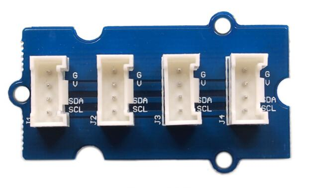
I2C Hub Grove is an extension Grove module for connecting multiply I2C devices to Grove I2C socket.
It can use with Universal 4 Pin to X2 4 Pin cable and connects up to 7 I2C devices which may cover most developing purpose.
If you want to konw more info about this module please click here.

This new version of button Grove contains one independent button, which are configured with pull-down resistor – ready for use with our microcontrollers as digital input. The button signals the SIG(D1) wire,NC(D2) is not used on this Grove.
ButtonSchematic
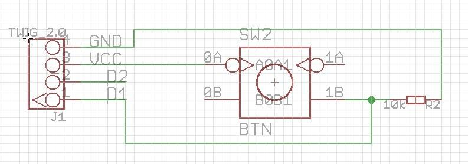
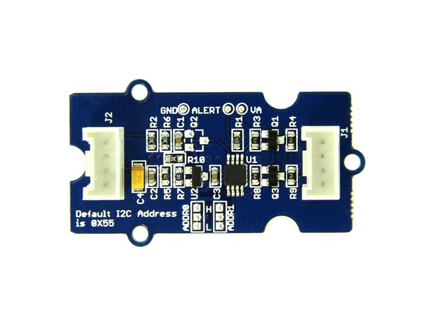
Grove - I2C ADC is a 12-bit precision ADC module based on ADC121C021.
It helps you increase the accuracy of value collected from analog sensor by providing a constant reference voltage.
Because its address is changeable, you can use up to 9 I2C ADC at the same time at most.
At the other hand, this module provides auto sleep function which lowers the power consumption considerably.
If you want to konw more info about this module please click here.
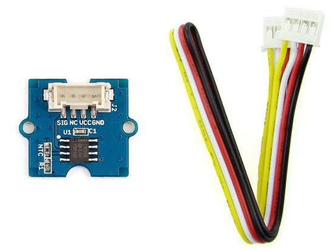
The Grove - Temperature Sensor uses a thermistor to detect the ambient temperature.
The resistance of a thermistor will increase when the ambient temperature decreases.
It's this characteristic that we use to calculate the ambient temperature.
The detectable range of this sensor is -40 - 125ºC, and the accuracy is ±1.5ºC.
And you should plug it to Grove - I2C ADC J2 Port.
If you want to know more info about this module please click here.
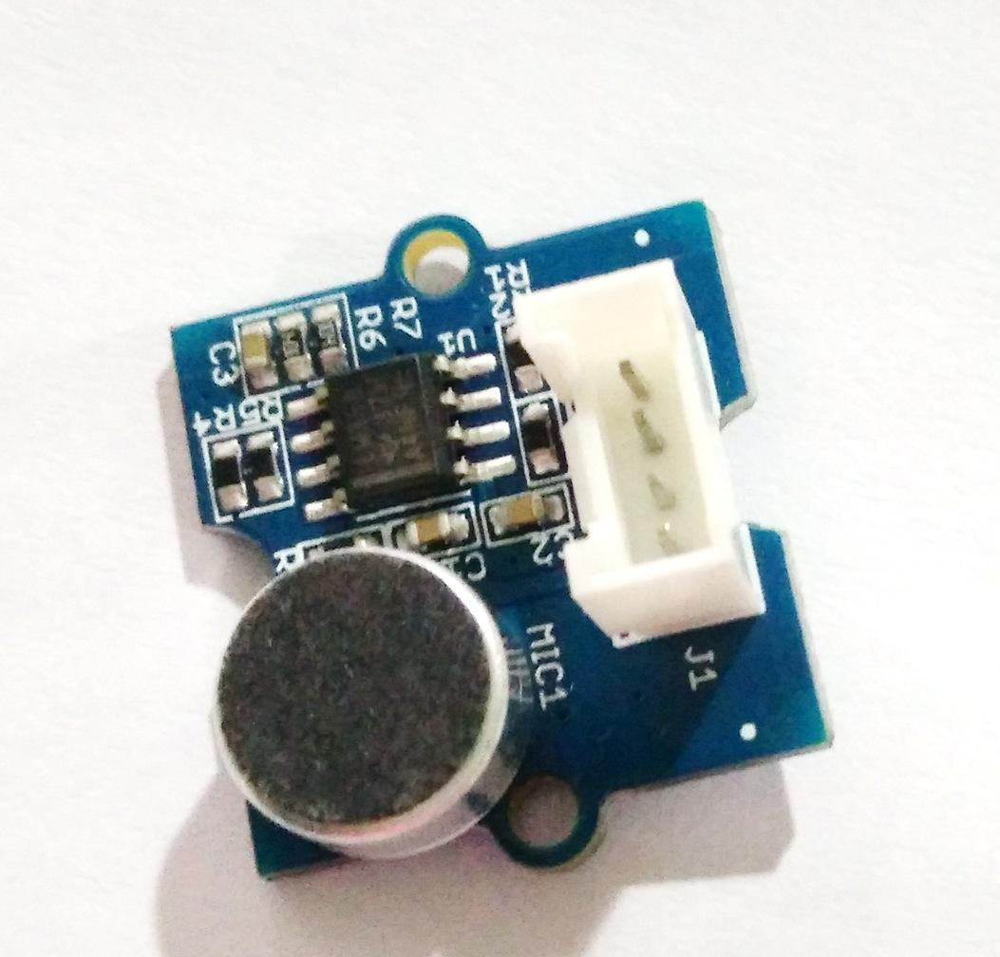
Grove - Sound Sensor can detect the sound strength of the environment.
The main component of the module is a simple microphone, which is based on the LM358 amplifier and an electret microphone.
This module's output is analog and you should plug it to Grove - I2C ADC J2 Port.
If you want to know more info about this module please click here.
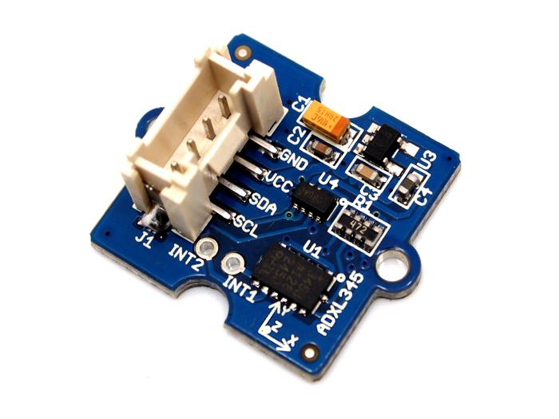
This is a high resolution digital accelerometer providing you at max 3.9mg/LSB resolution and large ±16g measurement range.
It's base on an advanced 3-axis IC ADXL345. Have no worry to implement it into your free-fall detection project, cause it's robust enough to survive up to 10,000g shock.
Meanwhile, it's agile enough to detect single and double taps. It's ideal for motion detection, Gesture detection as well as robotics.
If you want to know more info about this module please click here.
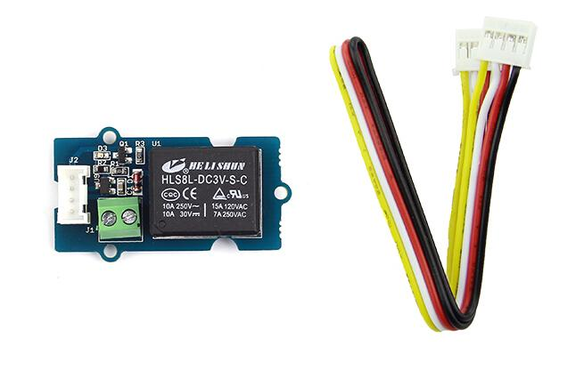
The Relay Grove is a digital normally open switch that controls a relay capable of switching much higher voltages and currents than your BBG boards.
When set to HIGH, the LED will light up and the relay will close allowing current to flow.
The peak voltage capability is 250V at 10 amps.
Please exercise great care when working with mains voltages— if in doubt contact a professional such as a licensed electrician for help.
Relay Schematic
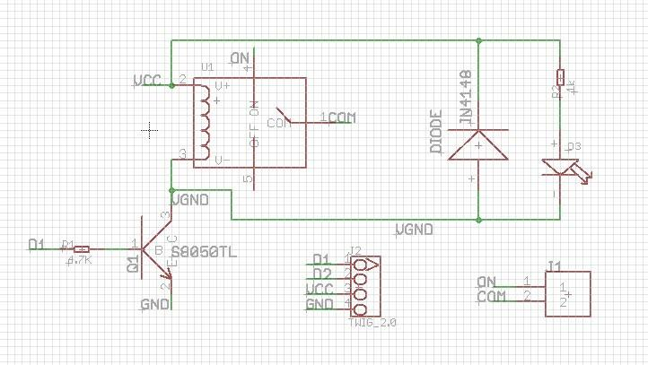

This is a simple yet enjoyable Grove to use.
The piezo can be connected to digital outputs, and will emit a tone when the output is high.
Alternatively it can be connected to an analog pulse-width modulation output to generate various tones and effects.
Buzzer Grove Schematic

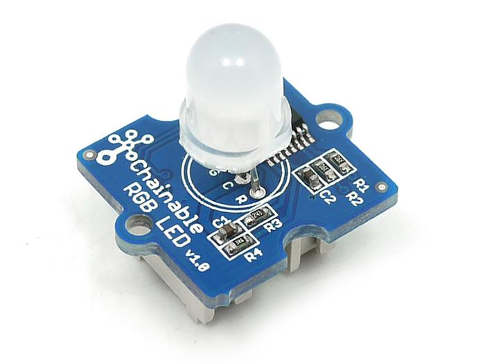
Chainable RGB LED is based on P9813 chip which is a full-color light source LED driver chip, and can provide constant current drive and modulated output of 256 gray.
Transmission by wire (DATA and CLK), built-in recycling, can enhance the transmission distance.
If you want to know more info about this module please click here.

It is a 16 color grayscale 96×96 dot matrix OLED display module with Grove compatible 4pin I2C interface.
Grove - OLED 96 x 96 is constructed with 96 x 96 dot matrix OLED module LY120 and SSD1327 driver IC.
Comparing to LCD, OLED screens are more competitive, which has a number of advantages such as high brightness, self-emission, high contrast ratio, slim / thin outline, wide viewing angle, wide temperature range, and low power consumption.
If you want to know more info about this module please click here.
To begin editing programs that live on your board, you can use the Cloud9 IDE.
As a simple exercise to become familiar with Cloud9 IDE, creating a simple application to blink one of the 4 user programmable LEDs on the BeagleBone is a good start.
If this is your first time to use Cloud9 IDE, please follow this link.
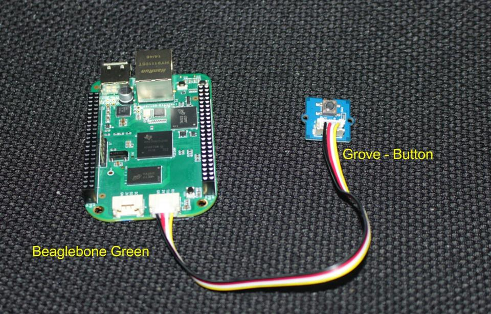
Step1: Set the Grove - UART socket as a Grove - GPIO Socket, just follow this link.
Step2: Click the "+" in the top-right to create a new file.


Step3: Copy and paste the following code into the new tab
import time import Adafruit_BBIO.GPIO as GPIO # Note: Use P9_22(UART2_RXD) as GPIO. # Connect the Grove Button to UART Grove port of Beaglebone Green. Button = "P9_22" # GPIO P9_22 GPIO.setup(Button, GPIO.IN) if __name__== '__main__': while True: if GPIO.input(Button): print "Button is pressed." time.sleep(1) else: print "Button is unstuck." time.sleep(1)
Step4: Save the file by clicking the disk icon and giving the file a name with the .py extension.
Step5: Run the code.
The use of the other Grove Modules similar to the Grove Button.
If you want to make some awesome projects with Beaglebone Green and Groves, here's some projects for reference.
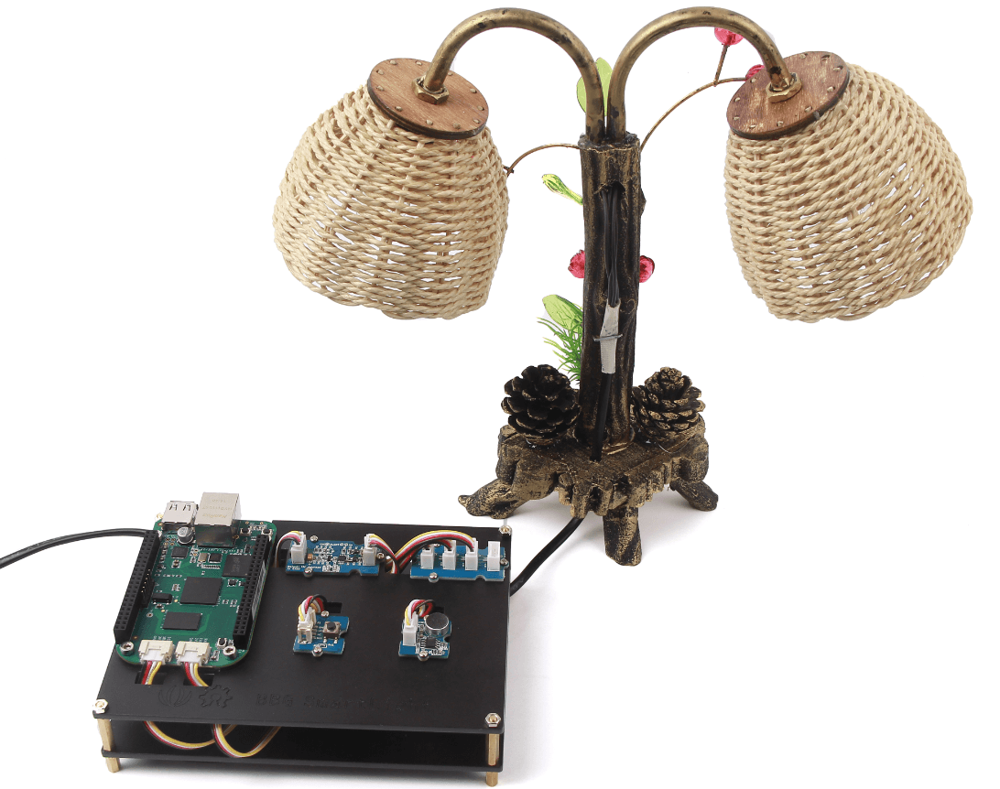
Present, more and more people want to control their household appliances conveniently, maybe this project can help you.
You can easily turn on/off your table lamp through web brower, sound and button. This project is made with BBG and BBG Starter Kit.
Of course you can also use any other Grove senors to make your own device.
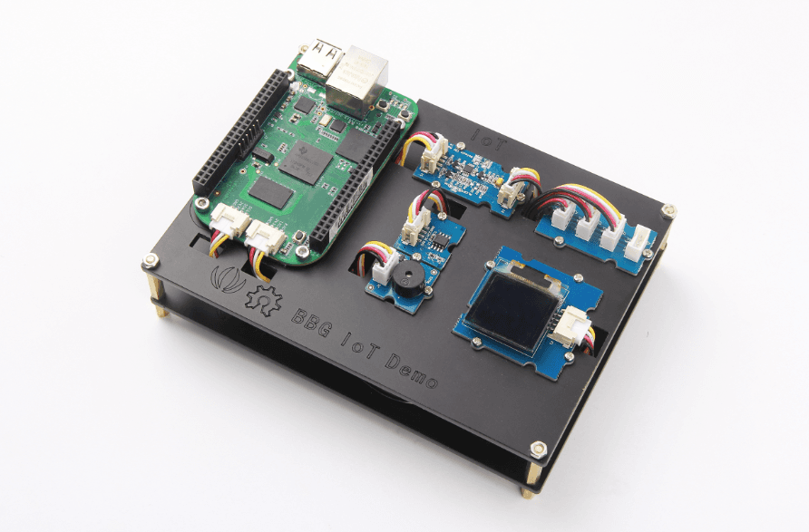
This is an IoT demo which we can upload the temperature info to the network, and we can view the information in real time.
When the temperature exceeds the threshold, the buzzer will ring.
Of course you can also use any other Grove senors to make your own device.
Copyright (c) 2008-2016 Seeed Development Limited (www.seeedstudio.com / www.seeed.cc)